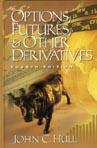

| LevSelector.com |
Financial Applications
| Page Under Construction !!
Page Under Construction !! |
| misc. links | home - top of the page - |
• 193.135.166.4/TermFinance/en/
- Financial Terms
• www.forbes.com/tools/glossary/glossary.jhtml
- Forbs Financial Glossary
• biz.yahoo.com/glossary/g.html
- Yahoo Financial Glossary
• www.capital.com/help/glossary.cfm
- Master Glossary Index
• www.bloomberg.com/money/tools/bfglosf.html
- Bloomberg Financial Glossary
• www.investopedia.com/dictionary/
-
• EDGAR
Database of Corporate Information - All the current government
filings for America's public companies and mutual funds.
• National
Association of Investors Corporation - provides information on
how to invest better.
• The American
Association of Individual Investors - purpose is to arm investors with
the tools and knowledge to manage finances effectively and profitably.
• The
Investment FAQ - An excellent introduction to investing compiled from
newsgroups.
• Wall
Street Research Net - An extensive page of links to Web-based
information about companies and their finances.
• www.fpml.com
- xml.coverpages.org/fpml.html
- Financial Products Markup Language (FpML)
Financial Calculators
• Investment
analysis calculator
• How
can I save a million dollars?
• Investment
yield calculator
• Present
value calculator
• Future
value calculator
• Simple
savings goal calculator
• How
much money could I save?
• What
interest rate would I need?
• How
much would I need to save each month?
Trading Systems
Order Entry Systems
Back-office processing
Reporting
• www.summithq.com
- Summit Systems - integrated Trading, Operations, and Enterprise
Risk Management software products for banks, financial institutions, and
capital markets participants.
| Security Identification Systems | home - top of the page - |
• http://invest-faq.com/articles/trade-security-id.html
- see list of codes.
CUSIP - Committee on Uniform Security Identification Procedures
www.cusip.com
- 9-digit code, for US and Canada.
CINS - The CUSIP International Numbering System -
EPIC - UK stock market
ISID - International Securities Identification Directory - cross
reference
ISIN - International Security Identification Number - for example
" IE0000197834 " - www.anna-nna.com
RIC - Reuters Identification Code
SEDOL - Stock Exchange Daily Official List - for example " 0-019-783
" - the only true unique international ID assigned to all foreign stocks
by the International Stock Exchange of London. The code is
made up of a 7 digit numeric code. This code is the basis of the ISIN code
for UK securities.
| Some good sites | home - top of the page - |
| Bill Margrabe: (Westchester County, NY, (914) 738-3309)
• www.margrabe.com - • www.margrabe.com/Links.html - • www.qgroup.org.au/LINKS/ - • www.mafc.mq.edu.au/coursewebarea/inv/links.htm - • www.mafc.mq.edu.au/coursewebarea/fin/links.htm - • finmath.com/wwwboard/messages/16.html - • finmath.com/ - • www.freeoptionpricing.com/ - • www.iafe.org/fe_links.ihtml - |
| John Hull: (Canada) author of "Options, Futures, and
Other Derivatives"
• www.mgmt.utoronto.ca/~hull/ - Rotman School of Management (Toronto, Ontario, Canada), Rotman Finance. Professor of Finance, Director, Bonham Centre for Finance and Maple Financial Group Chair in Derivatives and Risk Management • fisher.osu.edu/fin/findir/JohnHull.html - |
 |
| Books | home - top of the page - |
Books:
| • Dictionary of Finance and Investment
Terms (Barron's Financial Guides) $12
• Options, Futures, and Other Derivatives with Disk - John C. Hull - $101 • Solutions Manual: Options, Futures and Other Derivatives 4e - John C. Hull - $28 • Fixed Income Securities: Tools for Today's Markets, University Edition - Bruce Tuckman - $38 • Fixed Income Mathematics : Analytical & Statistical Techniques - Frank J. Fabozzi - $63 • Series 7 : Stockbroker NASD Exam (with CD-ROM) - Philip Meyers, et al - $48 • Investment Science - David G. Luenberger - $83 • Barron's Finance & Investment Handbook (5th Ed) - $28 • Introduction to the Mathematics of Financial Derivatives - Salih N. Neftci $60 • The Mathematics of Financial Derivatives : A Student Introduction - Paul Wilmott, et al - $26 • The Handbook of Fixed Income Securities - Frank Fabozzi(Editor) - $100 • Bond Markets: Analysis and Strategies - Frank J. Fabozzi(Preface) - $96 - Fundamantals Investments
|
| equities | home - top of the page - |
Shares - partial ownership, asset
| fixed income | home - top of the page - |
Bonds - Corporate, Municipal, Treasury, Savings, emerging
markets (junk bonds), etc.
• www.bondsonline.com/bpfaq.html
- faq
| derivatives | home - top of the page - |
Derivatives - futures, options, warrants, convertible
bonds, etc. - instruments derived from securities or physical markets.
In many cases derivatives are contracts rather than assets.
• invest-faq.com/articles/deriv-basics.html
- very good intro
• www.numa.com/ref/faq.htm
- (also www.numa.com/ref ) - Numa
Financial Systems -References on derivatives
• invest-faq.com
-
• www.margrabe.com/Dictionary.html
- ( www.derivativesdigest.com
) -
• www.adtrading.com
-
• www.adtrading.com/beginners/index.cfm
- several tutorials
• www.dpmllc.com
-
• www.derivatives.com
-Derivatives.com is the brainchild of Imagine Software Inc. I- real-time
derivatives trading and portfolio risk management software.
| swaps | home - top of the page - |
Swaps:
Big banks swap all kinds of promises all the time, like interest
rate swaps, forward currency swaps, options on futures, etc. They try to
balance all these promises (hedging), but there is the big danger
that one big player will go bankrupt and leave lots of people holding worthless
promises. Such a collapse could cascade, as more and more speculators
(banks) cannot meet their obligations because they were counting on the
defaulted contract to protect them from losses.
interest rate swaps - exchange floating bond to fixed bond
LIBOR - London Inter-Bank Offering Rate
tax swaps
| interest rates | home - top of the page - |
repos - secure loan (usually overnight)
repo-rate of bonds (bonds have different value/rate as a collateral)
| asset_allocation | home - top of the page - |
Asset Allocation - (AA) - allocate your assets
(parts of your portfolio) into different types of securities, thus decreasing
your risk and maximimizing returns over period of time.
AA approach is based on proven theory that the type or class
of security you own is much more important than the particular security
itself. AA should not be confused with simple diversification.
Diversification means putting your money into several securities which
could be of similar type - and thus may react to market in a similar way
(correlation).
AA not only reduces risk, but also maximizes returns over a period of time. This is because the proper blend of six or seven asset classes will allow you to benefit from the returns in all of those classes.
• www.gofso.com/Premium/IS/fg/fg-Assets.html
-
| risk management | home - top of the page - |
Risk Management - ways to understand and control portfolio
risks.
Here is a formal definition:
" Risk management is a discipline for dealing with the possibility
that some future event will cause harm. It provides strategies, techniques,
and an approach to recognizing and confronting any threat faced by an organization
in fulfilling its mission. Risk management may be as uncomplicated as asking
and answering three basic questions:
- What can go wrong?
- What will we do (both to prevent the harm from occurring and
in the aftermath of an "incident")?
- If something happens, how will we pay for it? "
• www.ecmag.net/EC1999/cagan12.html
-
• www.riskwaters.com/home.htm
- Risk Waters Group
• www.tradetrek.com/Education/risk_management.asp
-
• www.firstunion.com/capitalmarkets/riskmgmt/interestrate.html
- interest rate risk management
• www.cfo.com/
- read about Risk Management here
| tax swaps | home - top of the page - |
• http://invest-faq.com/articles/tax-swap.html - A tax swap is an investment strategy usually designed for municipal bond portfolios. It is designed to allow you to take a tax loss in your portfolio while at the same time adjusting factors such as credit quality, maturity, etc. to better meet your current needs and the outlook of the market. A tax swap can create a capital loss for tax purposes, can maintain or enhance the overall credit quality of your portfolio, and can increase current income.
| mathematics of derivatives | home - top of the page - |
stochastic calculus:
http://www.cs.cmu.edu/~chal/shreve.html - Steven Shreve's Lectures
on Stochastic Calculus and Finance
http://www.chiark.greenend.org.uk/~alanb/ - Alan Bain Stochastic Calculus
Notes
http://www.risktraining.com - Risk Training
volatility surfaces:
http://www.tta.com.au/Services/Quant/VolSurface/VOLSURFACEmain.htm
http://www.bradyplc.co.uk/corpweb/Equities/wp2k.htm
http://www.risk.net/ - Risk Magazine
The debate over stochastic volatility versus implied volatility surfaces
to model and price derivatives ...
term structure models:
http://finance.bi.no/~bernt/gcc_prog/algoritms/algoritms/node54.html
term structure modelling:
- modelling the spot rate,
- modelling the term structure of forward rates
Each method has advantages and disadvantages: For spot rate modelling
the
question of model choice is unclear, while for most HJM models computations
are difficult. We present a new class of term structure models essentially
as general as either of the above and for which differences between
models
are easy to understand and, for a class of interesting models, computations
are easy. - David Heath
http://www.angelfire.com/ny/financeinfo/
- titles and links
Arbitrage Pricing Theory (APT)
A model of financial instrument and portfolio behavior based on the
proposition that if the returns of a portfolio of assets can be described
by
a factor structure or model, the expected return of each asset in the
portfolio can be described by a linear combination of the factors with
the
returns of the asset.
The factors can be statistical artifacts; they can be market or industry
related; or they can be macroeconomic variables such as interest rates,
inflation, industrial production, etc. The resulting factor model can
be
used to create portfolios that track a market index, to estimate and
monitor
the risk of an asset allocation strategy, or to estimate the likely
response
of a portfolio to economic developments. Starting from an initial model
proposed by Stephen Ross, APT models have been created for applications
in
most cash and derivatives markets. See Multi- Factor Model.
http://netec.wustl.edu/WoPEc.html
http://netec.wustl.edu/WoPEc/data/Papers/wpawuwpfi9902001.html
binomial trees:
http://www.in-the-money.com/presentation/sld072.htm
http://cs-www.cs.yale.edu/homes/shaw/finance/bscholes_top.html
http://www.vbfi.com/handbook/topic9/5.asp
| online brokerage gomez.com | home - top of the page - |
Online Brokerage - from • www.gomez.com
Web sites, and technologies used.
These tables were compiled in early 1999, so some data may be obsolete.
| Company | Marketing Site | Trading Site | Hosting |
| Schwab | www.schwab.com
• Netscape-Enterprise/2.01-p100 on Solaris |
https://trading10.schwab.com
• Netscape-Enterprise/3.6 |
|
| DLJdirect | www.dljdirect.com
• Netscape-Enterprise/3.6 on Solaris |
https://www2.dljdirect.com
• Netscape-Enterprise/3.5.1 |
|
| Datek | www.datek.com
• Netscape-Enterprise/2.01-p100 on NT4 or Windows 98 |
https://orders12.datek.com/
• Netscape-Enterprise/2.01 |
|
| E*trade | www.etrade.com
• Netscape-Enterprise/2.01-p100 on Solaris |
https://trading.etrade.com
• Netscape-Enterprise/2.01-p100 |
|
| Discover | http://www.discoverbrokerage.com/
• Apache/1.2.5 mod_perl/1.07 |
https://clients1.discoverbrokerage.com
• Stronghold/2.2 Apache/1.2.5 mod_perl/1.07 |
|
| Waterhouse | http://www.waterhouse.com
• Stronghold/2.4.1 Apache/1.3.3 C2NetEU/2409 (Unix) on BSD/OS |
https://webBroker14.waterhouse.com
• Microsoft-IIS/4.0 on NT4 or Windows 98 |
|
| AB Watley
(very slow 1st page) |
http://www.abwatley.com
• Microsoft-IIS/3.0 on NT4 or Windows 98 |
https://www.edart.com ( digiTRADE inc. )
• Netscape-Enterprise/2.01 |
|
| SURETRADE
(very slow 1st page) |
http://www.suretrade.com
• Netscape-Enterprise/2.01 on Solaris |
https://www.suretrade.com (Quick & Reilly)
• Netscape-Enterprise/2.01 |
|
| Fidelity | http://www.fidelity.com
• Atreve WebSpective Interceptor 1.5 on Solaris |
https://scs321.fidelity.com
• Netscape-Enterprise/3.6 |
|
| Quick&Reily | http://quick-reilly.com
• Netscape-Enterprise/2.01 on Solaris |
https://wwws.quick-reilly.com ( Reality Online
)
• Netscape-Enterprise/2.01 |
|
| Trading Direct | http://www.tradingdirect.com
• Netscape-Enterprise/2.01 on Solaris |
https://www.rol.com ( Reality Online
)
• Netscape-Enterprise/2.01 on Solaris |
|
| Mr. Stock | http://www.mrstock.com
• Netscape-Enterprise/2.01 on SCO UNIX |
https://www.rol.com ( Reality Online
)
• Netscape-Enterprise/2.01 on Solaris |
|
| American Express | http://www.americanexpress.com/direct/
• Netscape-Enterprise/2.01 on AIX |
https://brokerage.americanexpress.com
• Netscape-Enterprise/3.5.1G |
|
| Firsttrade.com | www.firstrade.com
• Netscape-Enterprise/2.01 on Solaris |
https://www.rol.com ( Reality Online
)
• Netscape-Enterprise/2.01 on Solaris |
|
| Ameritrade | http://www.ameritrade.com
• Stronghold/2.2 Apache/1.2.5 C2NetUS/2002 on Solaris |
https://wwws.ameritrade.com
• Stronghold/2.2 Apache/1.2.5 C2NetUS/2002 on Solaris |
|
| Bull & Bear | http://www.bullbear.com
• Apache/1.3.4 (Unix) on Solaris |
https://www.rol.com ( Reality Online )
• Netscape-Enterprise/2.01 on Solaris |
|
| Wang (Fidelity) | http://www.maxxinvest.com/wangvest/
• Netscape-Enterprise/2.01-p100 on Solaris |
https://www1.nfnetserv.com ( Fidelity
)
• Netscape-Enterprise/2.01-p100 |
|
| My Discount Broker | http://mydiscountbroker.com
• Microsoft-IIS/4.0 on NT4 or Windows 98 |
https://mydiscountbroker.com
• Microsoft-IIS/4.0 on NT4 or Windows 98 |
|
| NDB
(National Discount Brokers) |
http://www.ndb.com
• Netscape-Enterprise/3.0J on Solaris |
https://www.ndb.com
• Netscape-Enterprise/3.0J on Solaris |
|
| Web Street | http://webstreet.com
• Apache/1.3.2 Ben-SSL/1.25 (Unix) on Solaris |
https://wwws.webstreetsecurities.com
• Apache/1.3.2 Ben-SSL/1.25 (Unix) on Solaris |
| Web Sites on the Keynote Web Brokerage Index | home - top of the page - |
Web Sites on the Keynote Web Brokerage Index
• www.keynote.com/measures/brokers/
| Web Site | Internet Access | Web Server Software |
| American Express | Cable & Wireless/MCI | Netscape-Enterprise/2.01 |
| Ameritrade | WorldCom/UUNET | Stronghold/2.2 Apache/1.2.5 C2NetUS/2002 |
| Charles Schwab | Cable & Wireless/MCI, WorldCom/UUNET | Netscape-Enterprise/2.01 |
| CompuTEL | Verio | Stronghold/2.2 Apache/1.2.5 C2NetUS/2005 |
| Datek | InterNAP | Netscape-Enterprise/2.01 |
| Discover | WorldCom/UUNET | Apache/1.2.5 mod_perl/1.07 |
| DLJdirect | Digex | Netscape-Enterprise/3.01 |
| Dreyfus | ATT/TCG CERFnet | CommerceServer400/1.0 |
| E*Trade | Epoch, WorldCom/UUNET | Netscape-Enterprise/2.01 |
| Fidelity | Cable & Wireless/MCI | Netscape-Enterprise/2.01 |
| Firstrade (First Flushing) | WorldCom/UUNET | Netscape-Enterprise/2.01 |
| Mr.Stock | ATT/TCG CERFnet | Netscape-Enterprise/2.01 |
| My Discount Broker (Sovereign) | WorldCom/UUNET | Microsoft-IIS/4.0 |
| National Discount | PSINet | Netscape-Enterprise/3.0 |
| Quick & Reilly | WorldCom/UUNET | Netscape-Enterprise/2.01 |
| Scottrade | Verio | Microsoft-IIS/4.0 |
| Suretrade | WorldCom/UUNET | Netscape-Enterprise/2.01 |
| Wang | Digex | Microsoft-IIS/4.0 |
| Waterhouse | WorldCom/UUNET | Stronghold/2.4.1 Apache/1.3.3 C2NetEU/2409 (Unix) |
| Web Street | WorldCom/UUNET | Apache/1.3.2 Ben-SSL/1.25 (Unix) |
| Note: Many of the sites above are "multi-homed", that is, connected to more than one Internet Access Provider. The lists of access providers and web-server software for each site were derived from public sources. | ||
• www.bearstearns.com/
- Bear Stearns